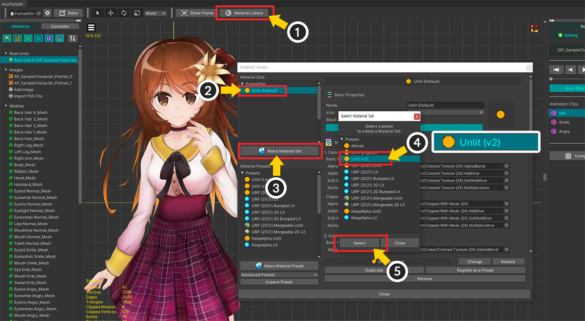
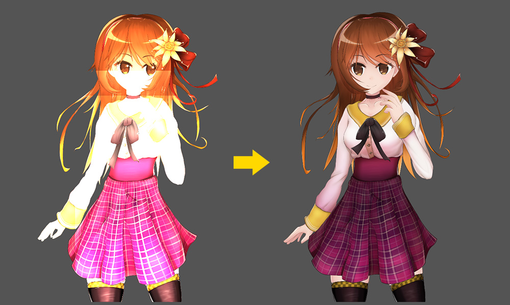

AnyPortrait > 메뉴얼 > 변경된 Unlit 재질
변경된 Unlit 재질
1.4.7
AnyPortrait에서 기본적으로 제공되는 Unlit 재질 (빛이 반영이 안되는 재질)은 이름과 다르게 Ambient Color의 영향을 받았습니다.
하지만 이것은 재질의 기대되는 역할과 달랐으며, Point Light 등에서는 라이팅 에러가 발생하는 문제가 있었습니다.
그래서 AnyPortrait v1.4.7부터는 새롭게 작성된 Unlit 재질이 기본값으로서 적용이 됩니다.
그렇지만, 기존의 재질을 이용하는 사용자들을 위해서, 저희는 기존 쉐이더를 수정하지 않고 별도로 작성하여 추가했습니다.
이 페이지에서는 새로운 Unlit 재질에 대한 내용과 적용 방법에 대해서 다룹니다.
참고
이 페이지에서 다루는 내용에 대해서는 다음의 메뉴얼을 같이 보시면 도움이 될 것입니다.
- 재질 라이브러리
- 씬에서의 라이팅 설정
새로운 Unlit 재질

캐릭터를 생성한 후 유니티 씬에 여러가지 라이트 객체들 (Directional Light, Point Light, Ambient Color 등)을 배치하고 설정해봅시다.
새로운 Unlit 재질은 라이트를 무시하고 텍스쳐 이미지의 원래의 색상을 렌더링하는 것을 볼 수 있습니다.

재질 라이브러리를 통해서 어떤 변화가 있었는지 확인해봅시다.
(1) Material Library 버튼을 눌러서 재질 라이브러리를 엽니다.
(2) 기본적으로 적용된 재질의 이름이 "Unlit (v2)"인 것을 볼 수 있습니다. (기존은 "Unlit (Default)")
(3) 재질 프리셋 리스트를 확인해보면, 이전 버전과 다르게 2개의 Unlit 관련 프리셋들이 등록된 것을 볼 수 있습니다.
- Unlit (Legacy) : 이전 버전까지 기본값으로 사용되던 재질입니다. 이름이 "Unlit (Default)"로부터 변경되었습니다.
- Unlit (v2) : AnyPortrait v1.4.7에서 새로 추가된 재질입니다. Ambient Color 등의 영향을 받지 않도록 변경되었습니다.
이 변경점은 AnyPortrait v1.4.7로 업데이트한 후 새로운 캐릭터에서는 기본적으로 적용됩니다.
이전 버전에서 만든 캐릭터에 새로운 Unlit 재질 적용
AnyPortrait를 업데이트하더라도 기존의 캐릭터의 재질은 변경되지 않습니다.
다음의 방법으로 기존의 캐릭터의 재질을 새 버전의 Unlit으로 교체할 수 있습니다.

(1) AnyPortrait 에디터를 열고 Material Library 버튼을 누릅니다.
(2) 이전 버전에서 만들어진 캐릭터의 재질은 "Unlit (Default)"로 등록되어 있을 것입니다.
(3) 새로운 재질 세트를 만들기 위해 Make Material Set 버튼을 누릅니다.
(4) "Unlit (v2)"를 선택합니다.
(5) Select 버튼을 누릅니다.

(1) 프리셋으로부터 "Unlit (v2)" 재질 세트가 추가되었습니다. 추가된 "Unlit (v2)"를 선택합니다.
(2) Default Material 버튼을 눌러서 기본 재질로 설정합니다.

Bake를 실행합니다.

이제 라이팅 에러 등이 없는 Unlit 재질이 적용되었습니다.